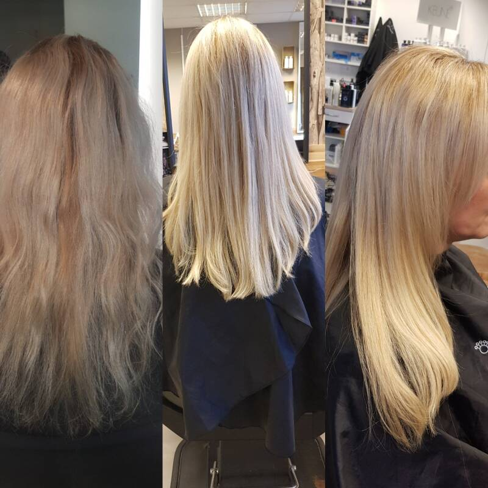

Hair extensions

Wij werken met Socap original hair extensions.
Dit haar is 100% menselijk haar uit India.
Microring extensions zijn ideaal omdat ze bevestigt worden
met een microring
en daardoor, ook weer terug omhoog
gezet kunnen worden.
Wax extensions zijn uitermate geschikt voor fijn haar
en om een lok te verlengen,
of een accent aan te brengen in
het haar.
Keratine Bhave
Heb je heel droog of pluizig haar maar wil je wel
de veerkracht
van je haar behouden dan is dit de juiste
behandeling voor je haar.
Dit is een keratine behandeling
op natuurlijke basis.
Dus heb je krullen en je wilt die niet
kwijt
maar het mag allemaal wat minder pluizig zijn.
Wil je dat het haar nog wel blijft
krullen of dat jehet nog
kan fohnen dat kan allemaal met keratine smooth.
Waarom een keratine behandeling?
Keratine is een bouwstof in je haar.
Door invloeden
van buitenaf en eventuele kleur behandelingen
is deze bouwstof niet meer optimaal aanwezig
in je haar.
Hierdoor gaat het pluizen of voelt
het erg droog en stug aan.
Hoelang blijft de keratine behandeling?
De keratine behandeling blijft tussen de 3 en 5
maanden in je haar.
Bij deze behandelingen krijg je
ook 2 thuisbehandelings producten mee naar huis.